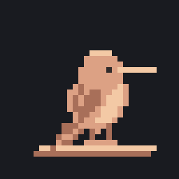
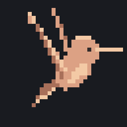
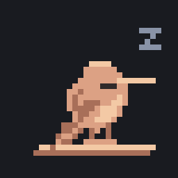
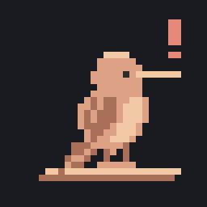
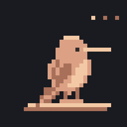

Second pass: steadier flight, tucked sleep, and head turns. All hand-plotted.

Connected · nothing running

Jobs running

Jobs queued
Job completed

Job needs attention

Connection lost · retrying